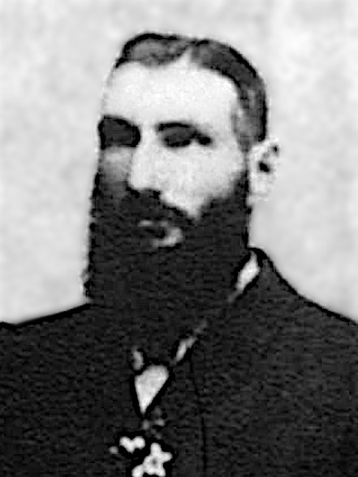
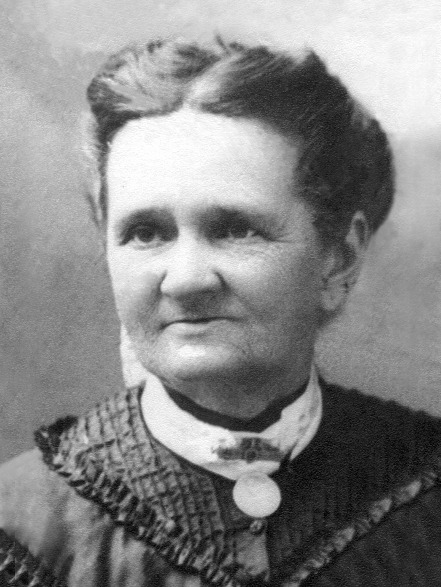
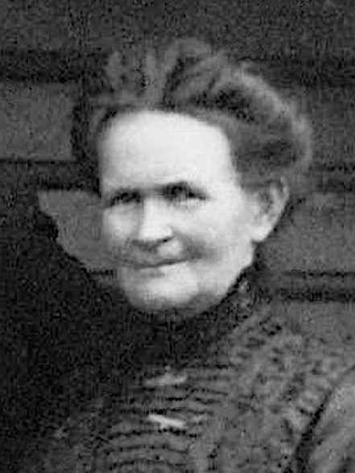
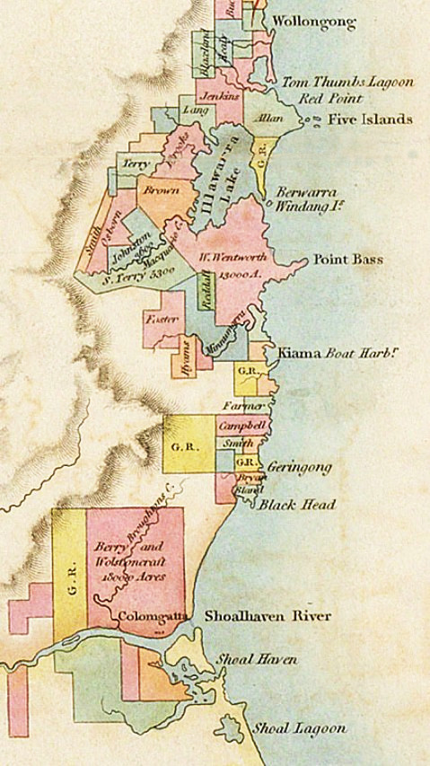

-
The Rankins
variously spelt: Rankin, Rankine, Ranking, Rangking, Ramkin, Rancon, Renkin, Renken, Reynkyn, Rankyne, Rankyn, Rainken, Rankeane, Rankan, Ranken

"Old Custom House, Greenmarket, Dundee" was painted by David Small (1845–1927) about 20 years after George and Elizabeth had migrated but still gives some idea of what they had seen of the place in their day.
From Old Dundee to New South Wales
Our Australian branch of the Rankin family all started with George Rankin, a carpenter from Dundee. George married Elizabeth Pennycook Murray in 1839 and the couple migrated to New South Wales in 1844 on board the 'Herald' from Greenock.
The story of the Rankins reaches back further though. George was born in Dundee on July 13, 1815 as the only son of David Rankin (1788-1831) and Hellen Thom (or Thoms) (born 1787) who were married in Dundee three years earlier on March 16, 1812. On the monument they erected to remember Hellen, their first child, David Rankin was recorded as being a Wright, in Dundee. "The term 'Wright' comes from the circa 700 AD Old English word 'wryhta' or 'wyrhta', meaning worker or shaper of wood. 'Wright' is still used in Scottish English in the original meaning of 'skilled woodworker'. Wright is also an anglicised version of the Scots Gaelic clan name 'MacIntyre' or 'Mac an t-Saoir'." (source: Wikipedia)
George's wife Elizabeth, also a native of Dundee, was born on September 24, 1815 as the eldest child of Frederick Murray and Isabella Baden (or Badden). Frederick is mentioned a number of times as being a linen weaver in Dundee. Weaving was a thriving industry for centuries in Dundee, having its greatest successes with wool, then flax for linen and after that jute which lasted until the end of the 20th century.

Map of Dundee showing the location of the Howff (Houff) Old Burying Ground where many of our family members (Rankin, Thom, Finlay etc.) have found their last resting place. Also shown is the location of the Cholera Hospital (circled in red).
The Howff
To comprehend the presence of the Rankin family in Dundee, it's helpful to start building a picture of Dundee itself, and of the Rankins who lived and died there. Some records of great interest are those of the Howff.
The Old Howff Burying Ground dates back to at least 1564, when Mary, Queen of Scots granted the land which once belonged to the Greyfriar Monks, to the Burgh of Dundee. 'Howff' is a word in the Scots language, likely derived from the German word 'Hof', meaning courtyard or enclosed space. Members of the Incorporated Trades of Dundee had used the Howff as a meeting place until 1776. The last burial in the Old Howff took place in 1878.
The New Howff was opened in 1834, having been modelled on the Glasgow Necropolis. It was eventually carved up and destroyed by the construction of roads, car parks and railways. Very little of it remains. On the other hand, the Old Howff has been preserved and is now part of Scottish National Heritage. About 80,000 people are recorded as having been buried there since the 1770's, when records started to be made. Before that time, there would have been many more. Yet, there are only between 1000 and 2000 stone monuments, so to have a gravestone at all is distinctly a statement of wealth.
Consequently, in 1814, when George's parents, David and Hellen, had a stone erected in memory of their infant daughter Hellen who had died at the age of 1 year and 4 months, the family must have been in the money. That would have changed dramatically in 1831 when David, as the sole money earner, died.Dundee Howff listings for some of our family members (source: Friends of Dundee City Archives – Howff Graveyard of Dundee)
The Scottish Ancestors of George Rankin and Elizabeth Murray
click the button on the left to show or hide the ancestors

Map of Angus showing locations of Inchture, Dundee, Barry, (Kirkden of) Monikie, Carmyllie and Dunnichen
The Rankins and The Murrays
The earliest traceable Rankin (or Rankan) ancestor in our line, was our 5x great-grandfather, John Rankan, whose wife was Helen Dick. Their eldest son, David Rankan, was born in Barry, about 9km east of Dundee. David's wife, Ann Salmond, was born in Carmyllie, about 7km north-east of Barry. David and Ann's son, who was also called David, was born in Monikie, and as can be seen from the map to the right, is a place roughly halfway between the birthplaces of his parents.
The Salmond family line can be traced back further, all the way to Thomas Salmond, our 9x great-grandfather, who was born in 1628. For seven generations the descendants kept close to Carmyllie, venturing sometimes to marry someone from the neighbouring Monikie or Dunnichen. As time progressed, the pull towards Dundee was too great.
The same phenomenon happened to Elizabeth Pennycook Murray's ancestors. There was a gradual progression from Perthshire towards Dundee with its booming weaving industry. Dundee is where both George and Elizabeth were born. Yet only a few years after having met in their early twenties, it seems that George, the son of a Wright, and Elizabeth, the daughter of a Weaver, somehow became restless enough to go further abroad, to Australia.
There are some other major factors to consider though. In 1826, when George was about 11 years old, cholera broke out in Dundee and in an attempt to contain the outbreak, the council acquired a tenement building, formerly used to house sailors, and remodelled it into a Cholera Hospital to isolate the infection. The cholera subsided but in 1831/32 came back with a vengeance. The town's newspaper recorded some time afterwards that one doctor anonymously reported that in 1832 over 5000 people died from the disease in under 6 months.
The Church records of burials at that time show only a fraction of that number but it is known that there were cholera pits in the Howff cemetery because there was not enough time for proper burials. How many of the Rankins and their relatives succumbed to the disease will probably never be known. George's father died in 1831 of a 'bowel complaint' which could have been cholera related. As well as that, George's two elder siblings are known to have died in infancy, yet it's possible that all his other siblings were also lost to some sickness or another. Elizabeth's parents were both no longer living by 1844 even though they would have only been in their fifties by then.
_all.jpg)
16th century map of Dundee and surrounds
.jpg)
16th century map of Dun-Tay (Dundee)
John Rankan and Helen Dick
» John Rankan
married Helen Dick
David Rankan (1755–) and Ann Salmond (1756–)
On record, the parents of the David Rankin who was born in 1788, were David Rankan and Ann Salmond but there is no record available for their marriage. On the other hand, Ann Salmond had a sister, Barbara, who was 2 years younger and who married a David Rankin, first in Carmyllie on 12 August 1785 and again on 14 August 1785 in Panbride. There is no record of a David Rankin and a Barbara Salmond having any children, but the birthdate of 1786 matches. Regarding the two marriages, it was common practice at the time for a couple in Scotland to have a ceremony at the locations of both sets of parents. Barbara's (and Ann's) parents were both from Carmyllie, where the first marriage took place. David's older sister Jean, was born in Panbride, the location of the second ceremony.
Ann Salmond came from a long line of Carmyllie residents. The parish, Carmyllie, is about three by five miles in size and contains two villages, Redford and Greystone. The area was once famous for producing Carmyllie Stone, high quality and varied sandstone and slate ideally suited for roof covering, building, steps, paving and flooring. The quarried and finished stone was transported to the surrounding shires as well as England, the Continent, North and South America, Australia and the Colonies. There were quarries in the surrounding districts as well, but the ones in Carmyllie were centuries old, making them the oldest quarries in Scotland.
» David Rankin (1755–)
married Ann Salmond (1756–)
David Rankin (1788–1831) and Hellen Thom (1787–)
» David Rankin (1788–1831)
married Hellen Thoms (1787–) in Dundee, 16.03.1812 or 16.03.1811
Robert Thom and Helen Finlay
George Rankin's mother, Hellen Thom was the youngest child of Robert Thom and Helen Finlay. Just like George, Hellen was born in Dundee. Unfortunately her family line, so far, has not been further traceable.
» Robert Thom
married Helen Finlay in Dundee, Angus, 15.02.1775
Record of Marriage
May 1814 Frederick Murray, Weaver & Isabella Badon, daughter the late of Robert Badon, Weaver, both in this parishRecord of Birth
1815 September, Born 17th, Baptised 24th, Frederick Murray, Weaver and Isabella Baden had Elizabeth Pennycook Murray. Named after E. Murray, Aunt and Jean Pennycook, GrandmotherFrederick Murray and
Isabella Baden (1786–)
Elizabeth Pennycook Murray belonged to one of the Murray families scattered throughout Perthshire. Her mother Isabella, was the daughter of Robert Badon, a weaver. Her father Frederick was also a weaver and he eventually settled in Dundee with his family.
The most famous Murrays of Perthshire are those near Blairgowrie at Blair Atholl, the seat of the Dukes of Atholl. That family is also related to the Murrays of Ochtertyre, with George and Patrick Murray being mentioned in our story of the McIntyres of Glenartney. Many more strands of the Murrays are woven into our family history.
Whether or not the 'poor' Murrays of our family are related to the 'rich' Murrays alongside them is a point for speculation but one thing is for sure, the name Murray pops up almost everwhere our ancestors have been in Scotland.
» Frederick Murray
married Isabella Baden in Dundee, 10.06.1814and they had the following children:
Elizabeth Pennycook Murray 17.09.1815 –
*Dundee30.10.1900
†Wollongbarm. George Rankin in Dundee, 16.12.1839 John Murray 10.08.1817 –
*Dundee03.01.1860
†Locheem. Janet Jack in Dundee, 03.03.1843 Margaret Murray 06.01.1820 –
*Dundeeunknown
†unknownmarriage status unknown William Peddie Murray 25.03.1822 –
*Dundee26.12.1822
†Dundee9 months old May Ethert (Marjory) Murray 12.09.1826 –
*Dundee07.09.1889
†Locheem. George Haxton in Dundee, 29.06.1857 William Murray ??.??.1827 –
*Dundee26.12.1873
†Dundee46 years old, single, unmarried David Cochrane Murray 25.09.1829 –
*Lochee10.09.1887
†Locheem. Mary Stewart Valentine in Dundee, 14.12.1857

1844 Agreement to work for Alexander Berry for six months when George and Elizabeth migrated to New South Wales
...and 56 years later, after a life in the colony:
1900 From the Obituary for Elizabeth RankinThe Rankins in Australia
When George Rankin and his wife Elizabeth Pennycook nee Murray arrived in Australia early in 1844, they immediately moved about 70 miles south of Sydney to a place called Jamberoo in the district of Shoalhaven. Although the area was called Shoalhaven it was in fact closer to what later became Shellharbour which was at that time known as Peterborough Estate. Their reason for going to Jamberoo can be discovered by examining the work agreement made five days after they arrived, namely to take up working as carpenter and laundress for Alexander Berry Esquire, a businessman whose main office was in George street, Sydney.
Alexander Berry
Alexander Berry had a rather colourful and eventful background. He was born in 1783 on the Dundee side of Cupar in Fifeshire, Scotland, only a hop, step and a jump (ten miles) away from where George and Elizabeth were born and raised. He studied at St. Andrews and Edinburgh Universities to become a ship's surgeon, and at 24 accepted a commission with the East India Company. The young man's enthusiasm quickly turned to distress over the cruel conditions of nautical life as well as that of his profession. He resigned his position, chartered a ship, and set off for adventure to the Cape of Good Hope and a world of commerce. While in South Africa, he heard of the famine in the newly formed Colony of New South Wales and decided to fill his ship with provisions and head off.
Later while passing through Cadiz on one of his trips to London, Alexander Berry met Edward Wollstonecraft who not only became his London and then Sydney-side business partner, but also his brother-in-law when Alexander later married Edward's sister, Elizabeth. The Auntie of Edward and Elizabeth was the English writer and advocate of women's rights, Mary Wollstonecraft whose daughter, Mary Wollstonecraft (Godwin) Shelley, was the author of the novel 'Frankenstein'.Coolangatta Estate at the foot of Coolangatta Mountain (1860, by Conrad Martens)
(also known as Cullingatty, Cullengatty, Coloomgatty, Cullingatta, Coolungatta, Coolongatta, Coolloomgatta, Cooloomgata)
The two business partners arranged with the colonial office to be the first settlers of the coastal area south of Sydney. When Alexander returned to London to finalise arrangements and charter another vessel loaded with supplies, he brought back with him another Scot, the new Governor of New South Wales, Thomas Brisbane. Ten thousand acres and a hundred convicts were given to Berry and Wollstonecraft to establish their estate near the Shoalhaven River which they called Coolangatta, from a local Aboriginal word meaning 'splendid view'.
Over the years the Coolangatta estate was increased to over 65000 acres with help from Berry's brothers, especially David, who eventually managed and inherited everything, becoming Australia's first official millionaire. The Queensland town of Coolangatta was named after Alexander Berry's ship of that name, which was wrecked near there. The modern day town of Berry which was part of the Coolangatta estate, was renamed in 1889 to honour of the Berry family. Originally Berry was known as Broughton Creek, a place which will turn up later in our story of George and Elizabeth Rankin.
Jamberoo
In 1843, Henrietta Heathorn, who later married the famous biologist and anthropologist, T.H. Huxley, described her trip to Jamberoo. Henrietta was the daughter of Henry Heathorn, the manager of Woodstock Brewery and Mill at Jamberoo and was possibly George Rankin's boss.
From Wollongong to Jamberoo, the road was a mere day track through a forest of tropical foliage; gum trees 200 [feet] or more in height, gigantic India-rubber trees with broad shining green leaves, lofty cabbage palms, and many other kinds of tree towered above us, so that their tops made a twilight canopy, impenetrable to the sunlight, save for an infrequent clearing in the forest made by the settler’s axe. Huge lianas, some as thick as a man’s arm, hung down snakelike from the trees.
George in the Jungle
By the 1850's, after a number of years at Jamberoo, George and Elizabeth settled deeper into the Coolangatta Estate at the main settlement of Broughton Creek. Later still, they made their way closer to Shellharbour, or Peterborough Estate as it was known. Only a few months after George and Elizabeth arrived in the Colony, two more of our ancestors, Thomas and Harriet Fenwick had turned up at the Peterborough Estate. Their son, Robert Fenwick ended up marrying George and Elizabeth's daughter, Hellen Rankin. Hellen and Robert became our great-grandparents. When Thomas and Harriet moved to Wollongong, 17 miles north of Shellharbour, George and Elizabeth did too. Again when Thomas and Harriet returned to Shellharbour, George and Elizabeth were there as well.
Elizabeth Pennycook Murray
c1900, shortly before she died
George set up business as a contractor, first repairing and rebuilding, then taking on large projects such as building bridges and wharves with his sons, David and Frederick under the business name of George Rankin and Sons. Many of the contracts went through the Shellharbour Council where Thomas was three times Mayor so that's likely how the two families made contact.
Around 1872, the eldest son of George and Elizabeth, David, managed to get a bridge building contract further north in the Clarence River district. George and family followed, and so did Thomas's eldest son, Robert Fenwick with his wife Hellen. From there they all stuck together as they moved their way further northwards until reaching the Richmond River district, close to where another of our ancestors, Duncan McIntyre, was settled at Wardell. At least one of David Rankin's children, Ernest Charles David, was born in Wardell.
Later, David and then George settled at Bexhill, alongside Corndale where Duncan McIntyre's daughter, our great-grandmother Jessie (McIntyre) McDonald, lived out the rest of her days, till she passed away in 1916. As a matter of further coincidence, Duncan McIntyre's father-in-law, Joseph Kelly, was buried in the Dundee Howff where many of the Rankin family members came to their final rest.
George Rankin (1817–1898) and
Elizabeth Pennycook Murray (1815–1900)» George Rankin (1817–1898)
married Elizabeth Pennycook Murray (1815–1900) in Dundee, Angus, 16.12.1839and they had the following children:
(unnamed) Rankin 22.12.1840 –
*Lochee22.12.1840
†Lochee(stillborn) George Rankin ??.??.1842 –
*Lochee28.02.1843
†Lochee(under 1 year) David Rankin 26.12.1844 –
*Jamberoo24.09.1919
†Lismorem. Jane Price in Kiama, 19.11.1877 Frederick Rankin 04.10.1848 –
*Shellharbour19.09.1923
†Moore Parkm. Sarah Ann McPaul in Dapto, 18.12.1878 Hellen Rankin 12.09.1850 –
*Albion Park14.10.1940
†Cooroym. Robert Thomas Fenwick in Shellharbour, 05.02.1873 Isabella Rankin 15.01.1854 –
*Shellharbour07.08.1923
†Tweed Headsm. William Henry Powell in Kiama, 26.05.1873 Rosa Jane Rankin 26.10.1855 –
*Jamberoo02.06.1936
†Lismorem. Alexander Thorburn in Wyrallah, 25.01.1881
The four youngest children of George Rankin and Elizabeth Pennycook Murray:
 Frederick Rankin
m. Sarah Ann McPaul Hellen Rankin
Hellen Rankin
m. Robert Thomas Fenwick Isabella Rankin
m. William Henry Powell Rosa Jane Rankin
m. Alexander Thorburn
Some descendants:
Elizabeth Shepherd Rankin (1828–1899)
and
James Young Allan (1830-1901)
George had no brothers but he did have an older sister, Ann, and four younger sisters, Susan, Jean, Mary and Elizabeth. The youngest sister, Elizabeth Shepherd Rankin also migrated to Australia, seemingly to Victoria, where she married a mining manger, James Allan Young with whom she had six children. The first was born at George's home in New South Wales:» James Young Allan (1830–1901)
married Elizabeth Shepherd Rankin (1828–1899) in Ballarat, Victoria, 20.10.1858and they had the following children:
Robert Allan 20.12.1859 –
*Shoalhaven,
NSW??.??.1932
†Chelsea,
Victoriam. Kate Evelyn O'Connor in Ballarat, Victoria, 03.05.1882 David Allan 15.10.1861 –
*Ballarat,
Victoria08.10.1871
†Ballarat,
Victoria(10 years old) Thomas Morgan Allan 27.04.1864 –
*Ballarat,
Victoria??.??.1939
†Ballarat,
Victoriam. Sarah Ann Park in Ballarat, Victoria, 1889 William Watson Allan 03.09.1867 –
*Ballarat,
Victoria08.11.1868
†Ballarat,
Victoria(1 year old) Catherine Young Allan 11.11.1869 –
*Ballarat,
Victoria24.12.1946
†Ballarat,
Victoriam. Wallace Harry Harris in Ballarat, Victoria, 07.03.1898 Elizabeth Rankin Alan 17.03.1875 –
*Castlemaine,
Victoria20.06.1947
†Coburg,
Victoriam. Robert Simeon Nelson in Ballarat, Victoria, 01.10.1902

The New South Wales coastline showing where the Rankins were living on the south and north coasts. The distance from Shellharbour to Grafton is about 460 miles (750km).
Some Maps of Where the Rankins
Worked and LivedThe early estates of the south coast (of Sydney).
Jamberoo is located close to the center of the map, 5 miles (9km) inland from Kiama. Broughton Creek village lies near the end of the Broughton creek which runs through the middle of the Coolangatta Estate at Shoalhaven. The distance from Broughton Creek (Berry) to Kiama is about 14 miles (24km).
The Mouth of Richmond River with Immigrant Creek shown on the left, where David Rankin built a bridge
The Places of the Rankins
As bridge builders, the Rankins moved around quite a lot and here are some of those places.
Jamberoo, Illawarra District
The first place where George and Elizabeth lived in Australia was Jamberoo, a settlement which grew up around the cedar cutting of the early nineteenth century. The village of Jamberoo lies at the western end of the Minnamurra Swamp and is nestled in the steep sided valley of the Minnamurra River. As such, it is not subjected to the extreme weather which happens, for instance, in the nearby Albion Park.Broughton Creek / Berry, Illawarra District
In the 1860's George and Elizabeth were living near. or in. the village of Broughton Creek, later renamed Berry. As early as 1860, there was an advertisement in the Illawarra Mercury that the lease on the farm occupied by George Rankin was up for sale. Broughton Creek was established in the early 1820's as a settlement for woodcutters by Alexander Berry who eagerly sought the profits that could be had from felling cedar trees in that area.Ulmarra, Clarence River District
By 1872, George's son David, had moved to the Clarence River district where he built bridges for the government, but George and Elizabeth remained in Shellharbour until 1873. David was soon accompanied by his brother, Frederick. At first, the work done by the Messrs Rankin was partially tendered out for supplies of logs, hewn timber and earthwork but eventually those too became part of their stock and trade.
Around 1873, their parents, George and Elizabeth also took on the 700km northwards move, settling in Ulmarra, a small town on the south bank of the Clarence River, lying about 12km north-west of Grafton. There, George also went into bridge building work for the government.Grafton, Clarence River District
There are a number of references in the newspapers to Frederick having been settled in Grafton. At the time of his move away from the area, his farm at Great Marlow was put on the market to be sold or let in 1883, just two years before Grafton became a city.Wardell, Richmond River District
In 1879, David had his 50 acre property, house and contents at Ulmarra up for sale. He then moved to Wardell and once again was building bridges as well as wharves. It seems that Frederick remained in Grafton until at least 1886 at which time his farm was also up for sale. The exact whereabouts of George and Elizabeth at that time, remain a little unclear.Bexhill, Richmond River District
In 1894, only four years before his death, George acquired conditional purchase lands at Bexhill, presumably alongside where David had already settled, having had such warm responses from the locals after very successfully building excellent bridges for them. When David lost his wife in 1898, Elizabeth moved in with him and his six children to care for them as their housekeeper.
Timber getters at Lismore
Lismore, Richmond River District
David and Frederick went into voluntary insolvency in 1880 and at that time David moved to Lismore. Only two decades earlier, in 1856, the site of William Wilson's homestead paddock was proclaimed to be the "Town of Lismore" in the NSW Government Gazette. In the following years a township grew up on what was once known as the North Arm of the Richmond River, now called Wilsons River.Charcoal / Unanderra, Illawarra District
Mention should also be made that Frederick returned south to the Illawarra District, this time to Unanderra about 10km south-west of Wollongong. Unanderra was previously named Charcoal by Alexander Berry, who also called his aboriginal aide by that name, but whose real name was Nunberri. Charcoal was where Frederick's wife Sarah Ann was born. Their move was possibly due to the couple having been married in the neighbouring Dapto and that they simply wanted to be closer to her family.Tweed Heads, Tweed River District
Isabella, the daughter of George and Elizabeth, married William Henry Powell of London, and the couple moved to Tweed Heads about 1883.Wyrallah, Richmond River District
George and Elizabeth's daughter Rosa Jane married Alexander Thorburn of Wyrallah, on the east bank of Wilsons River, and about 10km south of Lismore. Coincidentally, Wyrallah borders on the north side of the Tucki Tucki Swamp where another member of our family, John Gillies McDonald, had his property named "Hillside". In 1870, Alexander Thorburn first arrived in the Richmond District in search of gold but in 1874 took up working for David Rankin on the Emigrant Creek bridge. Rosa and Alexander later lived in Wollongbar until their retirement in 1919, and celebrated their Golden Wedding anniversary in South Lismore in 1931.

Aerial view of Bexhill, Rankin lands and Rankin Road
George Rankin (3 blocks, 5+ acres each)
Ernest Charles David Rankin (12+ acres)
Elenor Jane Rankin (8+ acres)
Ernest and Elenor are the children of George's son DavidTimelines
from newspaper articles, records, archival material, maps etc.,
mostly to track locations.
George, the hard-working, choleric and irascible 'bad egg',
and Elizabeth, the long suffering wife.
From Elizabeth's obituary, 1900:
1844, at Jamberoo, Shellharbor and Illawarra for some years, then in the Clarence district, for a number of years,
and finally in Richmond River district, till her death in 1900, leaving behind 3 daughters and 2 sons, incl. Mr. F. Rankin of Unanderra
and 39 grandchildren on Richmond River, Tweed River and South Coast
With George having been born into such a disease-ridden place that Dundee was at the time, as well as growing up at the height of cholera there, it is not too surprising his temperament became so 'choleric', a term not only referring to 'chole', one of the four bodily humours but also to the behaviour of a person struck by the disease:
- characterized by anger "a choleric outburst","an irascible response"
- quickly aroused to anger "a hotheaded commander"
- easily moved to anger
- "men of the choleric type take to kicking and smashing"- H.G.Wells"
TIMELINE:
1844 upon arrival, at Jamboree in the Shoalhaven district
1860 Broughton Creek farm for sale, occupied by George Rankin
1860 Kiama, assault on wife who prevented sending son David over to Broughton Creek across Saddleback Mountain to Jamboree. It resulted in one month's imprisonment in Wollongong gaol, and to "find sureties to keep the peace for six months, himself in 50 pounds two sureties in 25 pound each", having quarelled with her over one hundred times and beaten the children unmercifully
1862 Shellharbor Council George Rankin seconds nomination of Thomas Fenwick
1862 (same section) Mrs George Rankin woken by snake
1864 Shellharbor Councillor's mention of the excellent manner in which George Rankin's contract was completed.
1867 Shellharbor, George's application for extension of term on work on road is accepted
1867 Shellharbor, assault on Dennis Foley while erecting a bridge for a road that ran through Foley's land. Fined 20s or 24hrs imprisonment. Fine was paid.
1870 George Rankin of Shellharbor's tender for erection of Mullet Creek bridge was accepted
1871 new and substantial bridge over Mullet Creek erected by Mr Rankin for the Government for 500 pounds
1871 Shellharbor, George Rankin and Sons tender for bridge over Bovards Creek blocked by Mayor
1873 Shellharbor, at George Rankin's residence, daughter Helen married to Robert Thomas Fenwick
1873 Shellharbor, at George Rankin's residence, daughter Isabella married to William Henry Powell
1873 Clarence and Richmond, Ulmarra advert from George for 23 cwt monkey
1873 Ulmarra Council pleased over George Rankin's Alumny (now Alumy) Creek bridge but not the approaches
1875 tender accepted for bridge at C.Everingham's, by Ulmarra Council
1875 George Rankin's tenders accepted - Bridge at Everingham's and formation of road
1875 tenders wanted by George Rankin at Swan Creek Public School (near Grafton)
1876 retort in Clarence and Richmond Examiner over hand rail on bridge over Deep Creek
1877 in Kiama, David Rankin of Charcoal married to Jane Price of Kiama
1878 tenders wanted for hewn timber for bridge over James Creek (which runs off the Clarence River), to be forwarded to George at Serpentine Bridge, North Arm, Ballina
1881 tenders wanted for girders and piles
1882 April tenders wanted for girders, piles and planking
1894 conditional purchase Lismore 15a 2r 25p portions 65,66,67 parish Bexhill 5pound per acre
1895 tender accepted, George Rankin of Lismore for erection of wharf and approach at Wyrallah
1897 tender accepted for wharf and approach at East Coraki R.R.
1898 George, father of David Rankin of South Lismore, died at his residence, Bexhill.
1898 Inquest into Georges's death. Verdict: Senile decay and old age.
David
The hard working son and all round nice guy.
About 1871, aged about 27, in the Clarence district, built many a bridge and wharf in the Clarence, Richmond and Tweed Districts,
in 1873 built bridge over Alumny Creek, then over Whiteman's creek and another on the Newton Boyd road, and over the Nymboida
moved to Richmond district, where he first built a bridge over Immigrant Creek, near Ballina
from the Clarence to the Tweed in all directions are to be found bridges and wharves built by Davie Rankin
Note: Unanderra was originally called Charcoal or Charcoal Creek
TIMELINE:
1872 David Rankin, tenders required for timber and logs for Alumny Creek Bridge
1872 Ulmarra Council paying balance of 33 pounds for contract over Coola Creek and culvert at Osborne's
1873 Big Hill, Newton Boyd Line, D and F Rankin advert for ten good labourers
1877 David Rankin, contractor of Charcoal Creek, married Jane Price of Kiama, in Kiama
1878 D and F Rankin seeking tenders for timber for Para Creek Bridge
1878 House fire adjacent Macquarie River Bridge, occupied by workers for Messrs Rankin
1878 Messrs Rankin working on Macquarie Bridge and to build two new bridges
1878 D and F Rankin's offer accepted for bridge over the main creek at Charcoal
1878 Main Charcoal Bridge being erected, being the fourth in the area after the minor Charcoal Bridge, Darke's Bridge and and the excellent Fairy Creek Bridge.
1878 D and F Rankin wanting tenders wanted for 170 cubic yards of 3 inch metal at Charcoal Creek. 1878 D and F Rankin, Charcoal, wanting pick and shovel men, highest wages given
1878 auction for Messrs D and F Rankin for old bridge material
1878 David Rankin was charged with having assaulted William Harvey. Rankin was provoked by Harvey who was with his brother and another, so he told them to move off and eventually hit defendant with a stick. The Harveys took to throwing stones at Rankin. All four were fined 20 shillings and ordered to pay their own costs.
1879 auction of David Rankin's highly improved 50a farm, portion 21, at Ulmarra, contact Mr Fenwick now on the farm
1880 auction of David Rankin's household furniture & effects and contractor's plant and draught mare
1883 Broadwater, 3 year old son, and only child, Donald died (was their only child to be born in Grafton)
1886 tenders accepted for wharves at Wardell and Swan Bay
1890 tenders wanted to draw 25000 feet of timber, contact D.Rankin Junction Hotel, North Lismore
1894 August, Lismore, Bankruptcy Court, voluntary sequestration: David Rankin, of Lismore, contractor
1893 September, notice to creditors re Bankruptcy No. 8636
1898 David's father George died in April
1898 David's wife Jane died in July
1919 24 September, passed away, loved father of Edith Rankin, Mrs N.E.Fiddes and Mrs R.W.McGill
• took a break from bridge building to be proprietor of Junction Hotel, North Lismore
• shortly after, he retired from hotel keeping, his wife died in 1898
• David and his wife Jane Price were both born in Jamberoo
• passed away, aged 75, at Mr. Thorburn's, South Lismore
• left behind 2 sons and five daughters:
• Mrs Butt, Boatharbour
• Mrs Turner, Gympie
• Mrs Fiddes, Misses Mabel and Edith, Sydney
• sons Ernest and David
• also a brother, Frederick, Sydney
• and three sisters:
• Mrs Fenwick, Cooroy
• Mrs Powell, Tweed Heads
• Mrs Thorburn, South Lismore
• and three grandchildren
• his sons served in the war, David died in Palestine and Ernest returned 1 week before his father's death
1919 for our late brother, A Lodge of Sorrow from Richmond River Masonic Lodge
1919 October 21, son Ernest Charles David Rankin married Caroline May Seccombe of Wollongbar
1919 November 27, Probate request by David Butt of Bexhill executor of Will of David Rankin
1935 June 25, death of Elsie Ann (Rankin) Fiddes at Bellevue Hill, Sydney, sister of Edith Rankin and Mrs R.W.McGill
1939 March 9, death of Mabel Grace (Rankin) McGill, at Newcastle, wife of Robert William McGill of Hamilton and sister of Edith Maud and Ernest Rankin, Sydney, Mrs D.Butt, Lismore, Mrs Ted Turner, Brisbane.
1951 October 31, funeral of Elenor Jane (Rankin) Butt, wife of Mr David Butt of Boatharbour
1972 death of Jessie Euphemia (Rankin) Turner
Frederick
Another hard working son (but the apple doesn't fall far from the tree)
TIMELINE:
1878 In Dapto, Frederick M. (Murray?) second son of George Rankin, Clarence River, married to Sarah Ann McPaul, third daughter of George McPaul of Charcoal
1883 farm to let on the river bank at Great Marlow, Grafton
1886 56a farm to let on the river bank at Great Marlow, Grafton
1886 56a farm up for auction on the river bank at Great Marlow, Grafton
Hellen
The caring daughter.
TIMELINE:


{kind=link}
{kind=link}
{kind=link}
{kind=link}
{kind=link}
{kind=link}
{kind=link}
{kind=link}
{kind=link}
{kind=link}
{kind=link}
{kind=link}
{kind=link}
{kind=link}
{kind=link}
{kind=link}
{kind=link}
{kind=link}
{kind=link}
{kind=link}
{kind=link}
{kind=link}
About Us
We are the descendants of Anglo-Scottish-Prusso-Germanic
Australian migrants who settled in the newly formed colonies of New South Wales and Queensland
in the nineteenth century. The idea behind these pages is to present
the stories and characters of those early settlers along with information about their origins, descendants, families, whereabouts and activities.
There are often themes running through their struggles and
achievements telling a tale of resourcefulness and hardships in an alien world.
The paradox of Australia as an ancient and raw continent and as a 'New World' portrays
a collision of ideals and realities yet still shows a continuity in how they dealt with everyday life.